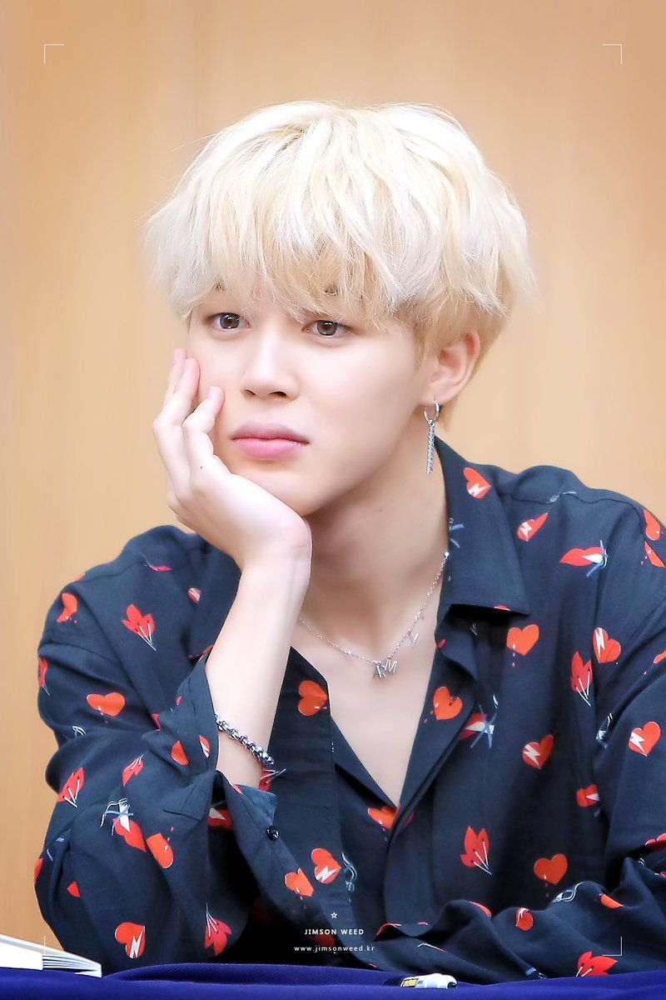
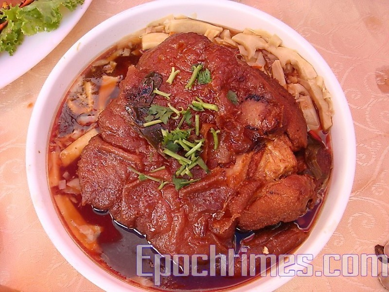

朴智旻（韓語：박지민 Park Ji Min，1995年10月13日－），
藝名為Jimin（韓語：지민；日語：ジミン）。
韓國男藝人，韓國男子團體防彈少年團的團員，為最後一位入選防彈少年團的成員，在團內為主舞及高音主唱。
2013年6月13日，透過單曲專輯《2 COOL 4 SKOOL》韓國出道。
2014年6月4日，透過日語單曲《No More Dream -Japanese Ver.-》在日本出道。
求學時期以第一名的成績，進入釜山藝術高中舞蹈科主修現代舞，並成為釜山藝術高中，首位以舞蹈科男性學生身份成為首席的人。
擁有"現代舞首席"、"killing part 製造者"、"音色強盜"等多個榮譽稱號。
在南韓以"춤선(舞蹈曲線）"優美而聞名，舞台個人直拍影片亦時常成為話題。
金泰亨（韓語：김태형 Kim Tae Hyung，1995年12月30日－），藝名V（韓語：뷔；日語：ブイ）。
韓國男藝人，為韓國男子團體防彈少年團的成員，擔任隊中低音主唱及舞蹈，為第六位入選防彈少年團的成員。
2013年6月13日，透過單曲專輯《2 COOL 4 SKOOL》出道。
2014年6月4日，透過日語單曲《No More Dream -Japanese Ver.-》在日本出道。
2016年2月下旬，出演KBS電視劇《花郎》昔翰星一角，正式以本名金泰亨作為演員出道，亦為防彈少年團中首位挑戰演技的成員。
金泰亨的圈內好友眾多，曾於出演的綜藝節目《花美男Bromance》中被認證為「人脈王」。
好友包括BTOB陸星材、SHINee崔珉豪、EXO邊伯賢、少女時代Tiffany、潤娥、Wanna One朴志訓、朴敘俊、朴炯植、朴寶劍、河智苑等。
於2017年的「美國TC Candler全球百大最帥男星臉孔」排行中拿下「冠軍」，
並在韓國當地獲得「世一帥」(世界第一帥)稱號。[9]在2018年的「Starmometer」選舉中，
金泰亨以超過300萬的票數獲得榜首，成為2018亞洲魅力男的第1名，再次証明「世界彈」的人氣以及「世一帥」稱號。
田柾國（韓語：전정국 Jeon Jung Kook，1997年9月1日－），
藝名為Jung Kook（韓語：정국；日語：ジョングク），
韓國男歌手，是韓國男子團體防彈少年團中年紀最小的團員。
在團內擔任主唱、舞蹈、中心及忙內，於出道初期亦擔當副Rapper。
田柾國為第五位入選防彈少年團的成員，練習生時期曾到美國深造舞蹈。
2013年6月13日，透過單曲專輯《2 COOL 4 SKOOL》在韓國出道。
2014年6月4日，透過日語單曲《NO MORE DREAM -Japanese Ver.-》在日本出道。
連到第一頁
連到第2頁
連到第3頁
連到第5頁